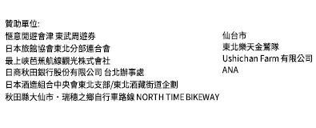

<!DOCTYPE html>  
<html>  
<head>  
    <!-- Google Tag Manager -->
    <script>(function(w,d,s,l,i){w[l]=w[l]||[];w[l].push({'gtm.start':
    new Date().getTime(),event:'gtm.js'});var f=d.getElementsByTagName(s)[0],
    j=d.createElement(s),dl=l!='dataLayer'?'&l='+l:'';j.async=true;j.src=
    'https://www.googletagmanager.com/gtm.js?id='+i+dl;f.parentNode.insertBefore(j,f);
    })(window,document,'script','dataLayer','GTM-MDNF9ZL');</script>
    <!-- End Google Tag Manager -->
    <script>(function(w,d,s,l,i){w[l]=w[l]||[];w[l].push({'gtm.start':
    new Date().getTime(),event:'gtm.js'});var f=d.getElementsByTagName(s)[0],
    j=d.createElement(s),dl=l!='dataLayer'?'&l='+l:'';j.async=true;j.src=
    'https://www.googletagmanager.com/gtm.js?id='+i+dl;f.parentNode.insertBefore(j,f);
    })(window,document,'script','dataLayer','GTM-TZN6W84');</script>
    <!-- End Google Tag Manager -->
    <meta charset="utf-8">
    <meta name="viewport" content="width=device-width; initial-scale=1.0; maximum-scale=1.0; user-scalable=0;"> 
    <title>東北六線介紹</title>  
    <link rel="stylesheet" type="text/css" href="vendor/animate.css">
    <link rel="stylesheet" type="text/css" href="css/reset.css">
	<link rel="stylesheet" type="text/css" href="css/main.css">
</head>  
<body> 
    <!-- Google Tag Manager (noscript) -->
    <noscript><iframe src="https://www.googletagmanager.com/ns.html?id=GTM-MDNF9ZL"
    height="0" width="0" style="display:none;visibility:hidden"></iframe></noscript>
    <!-- End Google Tag Manager (noscript) --> 
    <!-- Google Tag Manager (noscript) -->
    <noscript><iframe src="https://www.googletagmanager.com/ns.html?id=GTM-TZN6W84"
    height="0" width="0" style="display:none;visibility:hidden"></iframe></noscript>
    <!-- End Google Tag Manager (noscript) -->
    <header>
        <div id="menubtn"></div>
        <nav>
            <ul id="menu">
                <li><a href="index.html"></a></li>
                <li><a href="map.html"></a></li>
                <li><a href="activitytime.html"></a></li>
                <li><a href="content.html"></a></li>
                <li><a href="gift.html"></a></li>
                <li><a href="sixplace.html"></a></li>
                <li><a href="schedule.html"></a></li>
                <li class="iocn-fb animated infinite pulse"><a href="https://www.facebook.com/2014tohoku/" target="_blank"></a></li>
            </ul>
        </nav>
        
    </header>
    <article>
        <section class="bannerpage"> 
            <div>
                
                
            </div>
        </section>
        <section class="pagebg">
            <div class="title"></div>
            <div class="sixblock">
                
                
            </div>
            <div class="sixblock-mobile">
                
                

            </div>
        </section>
    </article>
    <footer>
        <div class="footerblock">
            <div class="col2 footerlogo">
                <a href="#" target="_blank"></a>
                <a href="http://tw.tohokukanko.jp" target="_blank"></a>
                <a href="https://www.welcome2japan.tw/" target="_blank"></a>
            </div>
            <div class="col2 footercompany">
                <a href="#" target="_blank"></a>
                <a href="http://www.jreast.co.jp/tc/" target="_blank"></a>
                <a href="#" target="_blank"></a>
            </div>
        </div>
    </footer>
    
    <script src="vendor/jquery-1.12.4.min.js"></script>
    <script src="js/main.js"></script>
</body>  
</html>